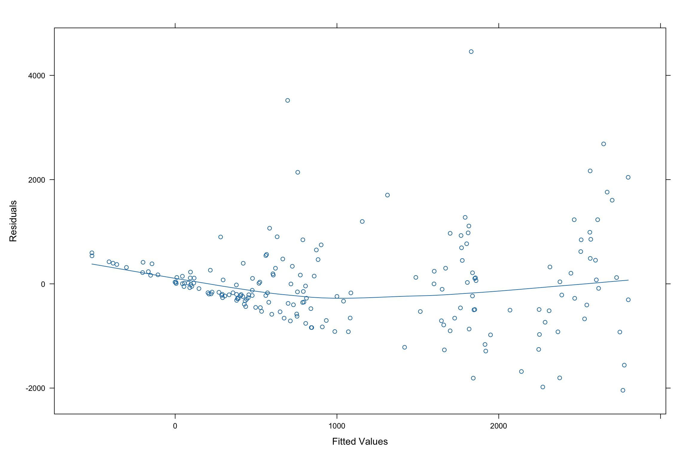
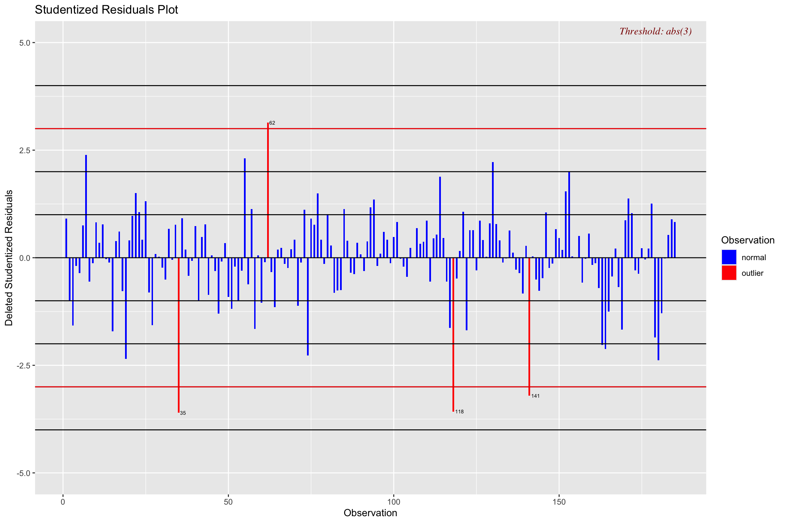

We wanted to determine whether a country’s economic and developmental level in the prior year had a relationship with how they handled the COVID-19 pandemic. We felt we could determine this by whether a country’s GDP per capita, child mortality rate, and poverty rate (all from 2019) share a relationship with the total COVID-19 deaths per million people during the COVID-19 pandemic.
Our initial hypothesis is that countries with a higher GDP per capita, lower child mortality rate, and lower poverty rate will have a lower number of total COVID-19 deaths per million people during the COVID-19 pandemic. This was thought because countries that were deemed more developed would better deal with the severity of the pandemic.
The outcome variable we’re looking at is Total COVID-19 Deaths per million (as this would help put it in perspective of a country’s population). We then looked at 4 explanatory variables, 3 being numerical (GDP Per Capita, Child Mortality Rate, Poverty Rate) and 1 being categorical (Region). The 3 numerical variables have use in determining a country’s developmental status. The categorical variable was separated into 4 geographical regions as opposed to cultural regions, these are Africa, Asia & Oceania, Americas, and Europe.
The COVID-19 related data was collected from Kaggle but originates from the Worldometer website. Worldometer collected their COVID-19 data from the John Hopkins Coronavirus Tracking Global Dashboard, which is regarded as the most accurate and trusted source of information for the pandemic. The additional data of the numerical explanatory variables was collected from GapMinder.
| term | estimate | std.error | statistic | p.value |
|---|---|---|---|---|
| (Intercept) | 1504.0956783 | 274.2239914 | 5.484916 | 0.0000001 |
| gdp_pcap_2019 | -0.0139176 | 0.0042127 | -3.303709 | 0.0011512 |
| region1 | -314.4507110 | 216.8602210 | -1.450016 | 0.1487944 |
| region2 | 748.5793207 | 246.4763230 | 3.037125 | 0.0027434 |
| region3 | 1567.7863345 | 274.7239403 | 5.706770 | 0.0000000 |
| pov_rate_2019 | -9.9388900 | 4.3225643 | -2.299304 | 0.0226360 |
| child_rate_2019 | -10.3829380 | 4.3250191 | -2.400669 | 0.0173841 |
Our initial simplest model featured no transformations. The model summary showed an underwhelming R² value of 0.5389, along with extreme right skewed plots of the relationship between the variables. As seen above, the simple model does moderately well at explaining the possible relationship between the outcome and explanatory variables. A big worry was that the Asia & Oceania region had a p-value that would have them be rejected for significantly adding to the model, given all else was equal. This concerned us as that region has the largest population, features a majority of underdeveloped countries, and was where the pandemic stemmed from.
We felt that a transformation to the numerical variables may address the skewness and accommodate the p-values. After the transformation of the numerical X variables, we noticed that the plots had their skewness addressed but resulted in a decreased R² value of 0.5091. We also noticed that a plot of residuals were fanning out, as seen below, this encouraged us to attempt a transformation on Y.

With a fifth root transformation on Y, which was determined through a Box-Cox plot, we felt that we addressed the non-constant variance seen in the above plot. Along with the corrected plot, we noticed an increased R² value of 0.6232. Furthermore, as seen below, the p-values of our numerical variables now showed significant contribution to the model.
| term | estimate | std.error | statistic | p.value |
|---|---|---|---|---|
| (Intercept) | 4.2056765 | 0.2103863 | 19.990259 | 0.0000000 |
| gdp_pcap_2019 | -0.0000078 | 0.0000032 | -2.410873 | 0.0169318 |
| region1 | -0.3900889 | 0.1678899 | -2.323480 | 0.0212834 |
| region2 | 0.5530935 | 0.1891589 | 2.923961 | 0.0039055 |
| region3 | 0.8304638 | 0.2111065 | 3.933862 | 0.0001197 |
| pov_rate_2019 | -0.0130570 | 0.0033390 | -3.910490 | 0.0001308 |
| child_rate_2019 | -0.0147182 | 0.0033259 | -4.425377 | 0.0000167 |
Next, we assessed the normality of the error terms by looking at a QQ-Plot. Our error terms were approximately normally distributed, due to heavy tails in the QQ-Plot.
We then fit a complex model where we added an interaction term between GDP and Poverty Rate. We observed a F-test with a p-value very close to 0 and a p-value associated with the interaction term of 0.000102, with 68.75% of the variation in total deaths being explained by this model.
In addition, we added a quadratic term to our complex model. The p-value for the quadratic term was 0.00152, with 70.49% of the variation in total deaths being explained by this model, with a reasonable adjusted R squared explaing of 69.15% variation.
To determine if our base model is better, we ran an Anova test between the base model and the one with the interaction term. Since we observed a p-value, 0.0001017, which is less than 0.05, we rejected the null hypothesis and concluded that our interaction model is significantly better at predicting total deaths compared to our simple model.
Doing the same for our interaction model and the quadratic model, we observed a p-value of 0.001515 which meant we rejected the null hypothesis and concluded that the quadratic model was significantly better at predicting total deaths.
After splitting our data into 4 models to assess the 4 different regions, we observed p-values associated with GDP, poverty and child rate that suggested there was no relationship between these predictors and total deaths.
Within the Americas, the p-value associated with GDP is 0.782. However, in our models containing all regions, we see that these predictors are useful in predicting deaths. Conversely, within our simple model, the region of Asia & Oceania would not significantly add to the model when compared to countries across the globe, however, when assessed independently within their region, these countries were significant to the model. This means that across a singular region, these predictors could be useful, but when looking at these predictors while considering all countries, they might help us predict total deaths.
We validated our model by randomly splitting our data into a training sample and validation sample. We observed MSE values of 0.405 and 0.49 with MSPR values of 0.612 and 0.675 respectively. This showed that our model was moderate at predicting new observations from a countries GDP, child mortality rate and poverty rate, but not excellent.

From the Studentized Residuals plot, we can see that four countries deaths were significantly different from what we predicted. Those countries were China, Nicaragua and Samoa which had less total deaths than we had predicted, and Georgia which had more total deaths than predicted. This could be caused due to under reporting, age of the population, healthcare restrictions, etc. We also included added variable plots, and saw that our data was linear and our line of best fit goes through the heart of the data.
In conclusion, we’ve found that the results are inconclusive and do not provide sufficient evidence to support or refute the hypothesis. We’ve seen that as GDP Per Capita went up, total deaths tended to marginally go down, which was hypothesised but that as Poverty Rate and Child Mortality Rate went down, totals deaths also tended to go down. Some limitations included the fact that countries may have had unreliable or incomplete data, which resulted from misclassification, lack of testing, or even overreporting of COVID-19. In addition, further studies could look into how different socio-economic factors (such as gender, race, etc) intersect with our variables.